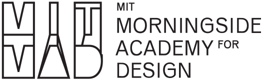

Information+ Conference 2025
Interdisciplinary practices in
information design and
visualization
14—16 November, in Boston, MA
Information+ is a biennial conference that brings together researchers, educators, and practitioners in information design and data visualization to explore shared questions and challenges in these rapidly changing fields. We aim to provoke rich, interdisciplinary discourse on how information representation engages within social, political and environmental contexts.
Information+ 2025 will be held in-person in Boston, USA, between November 14–16, hosted by Northeastern University’s College of Arts, Media, and Design (CAMD) and MIT’s School of Architecture and Planning through the Leventhal Center for Advanced Urbanism (LCAU) and Morningside Academy of Design (MAD). CAMD, LCAU, and MAD actively promote interdisciplinary approaches to teaching and research in information design, data visualization, and related fields.
This in-person event seeks to significantly foster community building and interdisciplinary exchange. Info+ 2025 continues the effort from previous convenings.
Information+ 2016 Emily Carr University of Art + Design, Vancouver Information+ 2018 University of Applied Sciences Potsdam Information+ 2021 Virtual Information+ 2023 University of Edinburgh
Info+ 2025 seeks submissions that embrace critical insights, provocations, theories, practices, and experiences within information design and data visualization and their applications. Design practitioners are encouraged to submit, alongside contributors from the humanities, sciences, and other interdisciplinary fields, representing both academic and non-academic perspectives. Information+ encompasses a series of Presentations, Workshops and an Exhibition.
Conference Organizers
Conference Chairs
Pedro Cruz, Northeastern University
Sarah Williams, Massachusetts Institute of Technology
Program Chairs
Catherine D’Ignazio, Massachusetts Institute of Technology
Crystal Lee, Massachusetts Institute of Technology
Arvind Satyanarayan, Massachusetts Institute of Technology
Skye Morét, Northeastern University
Workshop & Activity Chairs
Rahul Bhargava, Northeastern University
Laura Perovich, Northeastern University
Exhibition Chairs
Alberto Meouchi, Massachusetts Institute of Technology
Kate Terrado, Northeastern University
Design Chairs
Brockett Horne, Boston University
Todd Linkner, Northeastern University
Student Chairs
Areti Kotsoni, Massachusetts Institute of Technology
Jane Adams, Northeastern University
Supporters Chairs
Paolo Ciuccarelli, Northeastern University
John Ochsendorf, Massachusetts Institute of Technology
Diversity Scholarship Chairs
Eric Robsky Huntley, Massachusetts Institute of Technology
Barbara Castro, ESDI-UERJ
Program Committee
TBA
Advisors
Isabel Meirelles, Uta Hinrichs, Benjamin Bach, Marian Dörk, Dietmar Offenhuber, Estefania Ciliotta Chehade
Local organization
Ashley Treni
Students
Nehal Modi
Information+ 2025 is made possible through the help and support of many people and partnering organizations.
